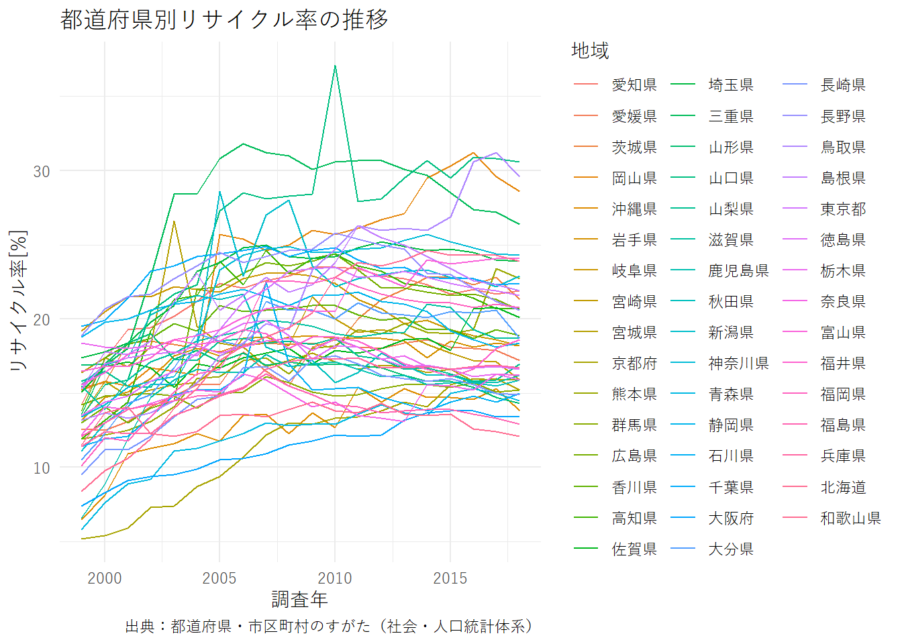
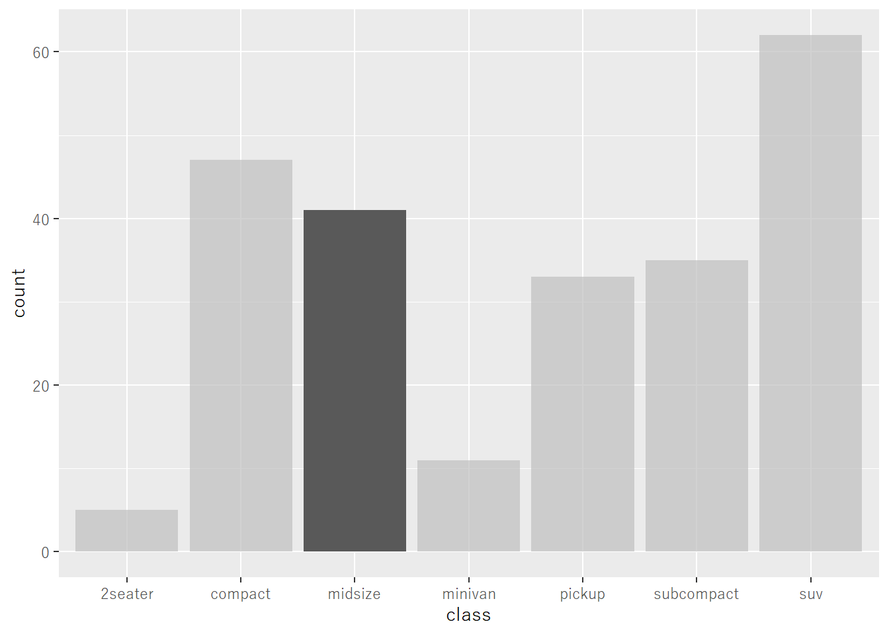
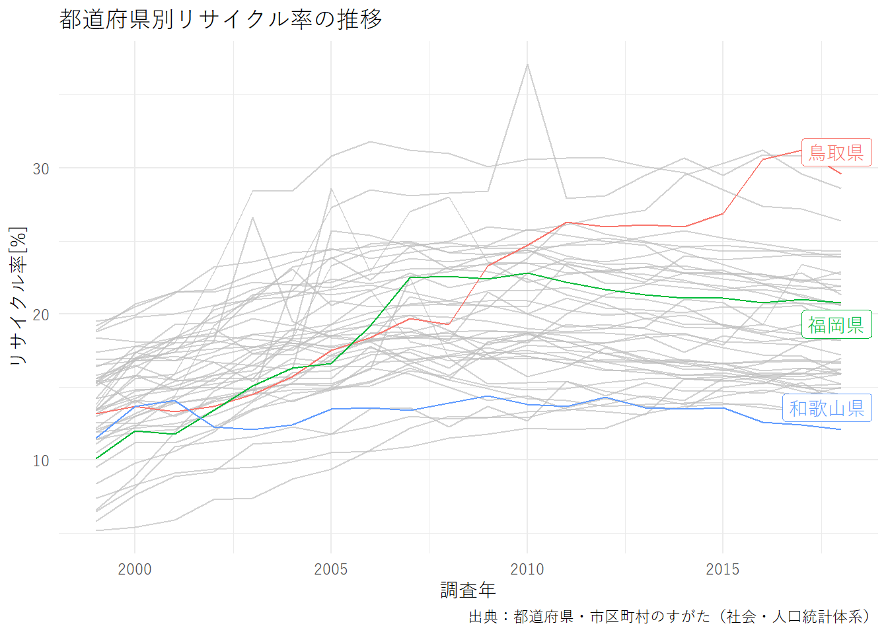

8.3 【例2】リサイクル率の推移の可視化
ここでは、都道府県別のリサイクル率を可視化してみます。データベースから「リサイクル率」で検索すると「社会・人口統計体系」の「都道府県データ」がヒットしますので、これを用います。データIDは0000010108となります。
estat_getMetaInfo(appId, statsDataId = "0000010108")$cat01 %>%
filter(str_detect(`@name`, "リサイクル率"))## # A tibble: 1 x 4
## `@code` `@name` `@level` `@unit`
## <chr> <chr> <chr> <chr>
## 1 H5614 H5614_ごみのリサイクル率 1 ％rr <- estat_getStatsData(appId, statsDataId = "0000010108",
cdCat01 = "H5614") %>%
filter(地域 != "全国")## Fetching record 1-960... (total: 960 records)head(rr)## # A tibble: 6 x 11
## tab_code 観測値 cat01_code `Ｈ 居住` area_code 地域 time_code 調査年 unit
## <chr> <chr> <chr> <chr> <chr> <chr> <chr> <chr> <chr>
## 1 00001 観測値 H5614 H5614_ごみ~ 01000 北海~ 19991000~ 1999~ ％
## 2 00001 観測値 H5614 H5614_ごみ~ 01000 北海~ 20001000~ 2000~ ％
## 3 00001 観測値 H5614 H5614_ごみ~ 01000 北海~ 20011000~ 2001~ ％
## 4 00001 観測値 H5614 H5614_ごみ~ 01000 北海~ 20021000~ 2002~ ％
## 5 00001 観測値 H5614 H5614_ごみ~ 01000 北海~ 20031000~ 2003~ ％
## 6 00001 観測値 H5614 H5614_ごみ~ 01000 北海~ 20041000~ 2004~ ％
## # ... with 2 more variables: value <dbl>, annotation <chr>rr %>%
separate(調査年, "year", sep = 4, convert = TRUE) %>%
ggplot(aes(year, value, group = 地域, color = 地域)) +
geom_line() +
theme_minimal() +
labs(x = "調査年", y = "リサイクル率[%]",
title = "都道府県別リサイクル率の推移",
caption = "出典：都道府県・市区町村のすがた（社会・人口統計体系）")
グラフから、全体としてリサイクル率が向上していることは分かりますが、線が多すぎて詳細がよく分かりません。プレゼンテーション用にグラフを加工してみます。グラフの表示方法でよく用いられるテクニックが「ハイライト」です。ここでは、最新の集計年での順位に基づき、1位と最下位、および福岡県をハイライトします。ggplot2のグラフでハイライトを行うには、gghighlightパッケージを用います。初めて使う場合は、インストールとセッション開始時のロードを行っておきます。
install.packages("gghighlight")
library(gghighlight)gghighlightパッケージで利用できるgghighlight()関数でfilter()関数と同様の書式で、ハイライトしたいデータを抽出する式を記述することで、該当するデータのハイライトができるようになります。例えばmpgデータの場合に、midsizeのクラスだけハイライトするには以下のようにします。
ggplot(mpg, aes(class)) +
geom_bar() +
gghighlight(class == "midsize", use_group_by = FALSE)## label_key: class
2017年度のリサイクル率の順位に基づいてハイライトするため、2017年度のリサイクル率の順位を計算しておきます。
order2017 <- filter(rr, 調査年 == "2017年度") %>%
mutate(order = min_rank(value)) %>%
select(地域, order)
head(order2017)## # A tibble: 6 x 2
## 地域 order
## <chr> <int>
## 1 北海道 42
## 2 青森県 6
## 3 岩手県 23
## 4 宮城県 14
## 5 秋田県 10
## 6 山形県 5これをリサイクル率のデータと結合して、リサイクル率が1位、47位および福岡県のデータをハイライトさせます。
rr %>%
left_join(order2017) %>%
separate(調査年, "year", sep = 4, convert = TRUE) %>%
ggplot(aes(year, value, group = 地域, color = 地域)) +
geom_line() +
gghighlight(order %in% c(1, 47) | 地域 == "福岡県",
use_group_by = FALSE,
label_params = list(direction = "y")) +
theme_minimal() +
labs(x = "調査年", y = "リサイクル率[%]",
title = "都道府県別リサイクル率の推移",
caption = "出典：都道府県・市区町村のすがた（社会・人口統計体系）")## Joining, by = "地域"## label_key: 地域